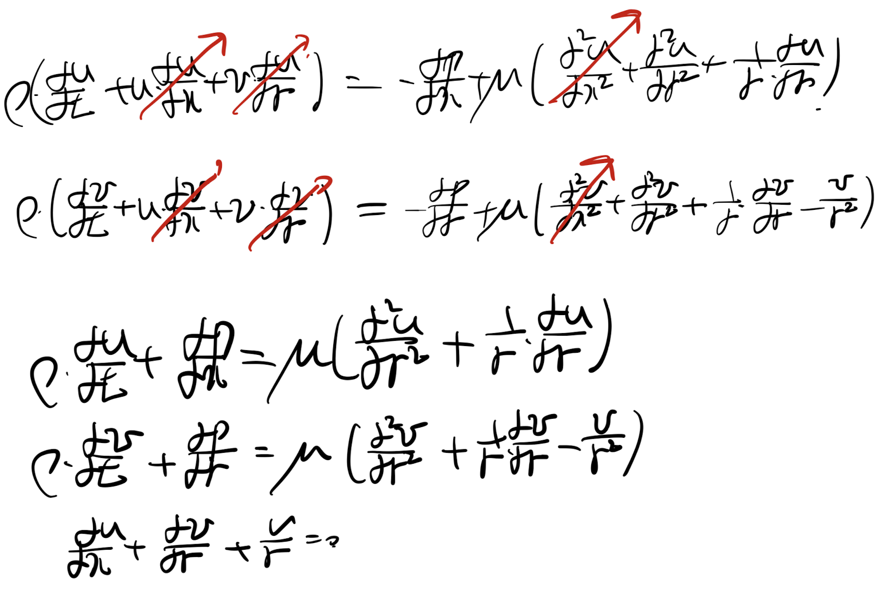
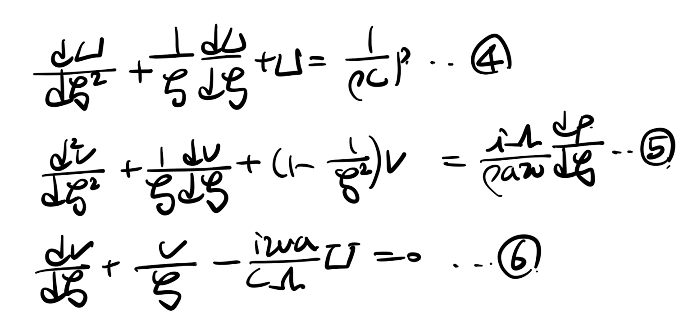
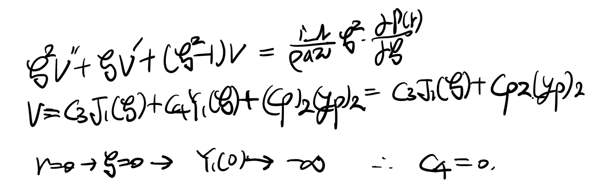
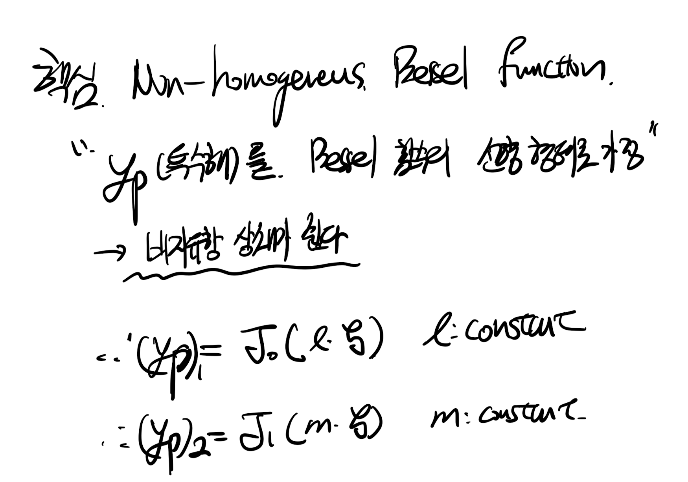
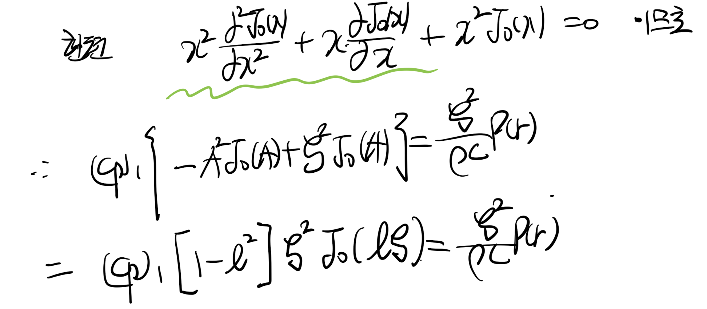
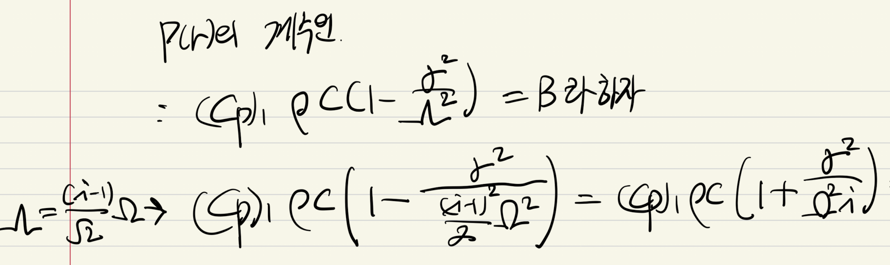
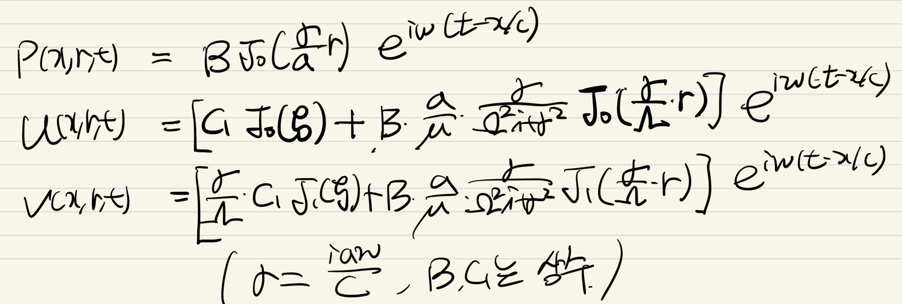

<!DOCTYPE html>
<html lang="ko">
<head>
  <meta charset="utf-8">
  <meta name="viewport" content="width=device-width, initial-scale=1">
  <title>[Pulsatile flow] 1. Flow on a elastic tube | Sehyeog Kim</title>
  <link rel="stylesheet" href="../../../assets/css/style.css">
</head>
<body>
  <!-- Mobile header -->
  <header class="mobile-header">
    <span class="site-title">Sehyeog Kim</span>
    <button class="menu-toggle" aria-label="Menu">&#9776;</button>
  </header>
  <div class="sidebar-overlay"></div>

  <div class="site-wrapper">
    <!-- Sidebar -->
    <aside class="sidebar">
      <div class="sidebar-bg">
        
      </div>
      <div class="sidebar-profile">
        
        <h1 class="profile-name">Sehyeog Kim</h1>
        <p class="profile-bio">AI &amp; Computational Engineering<br>Knowledge Base</p>
        <div class="profile-links">
          <a href="https://github.com/Sehyeogkim" target="_blank" rel="noopener">
            <svg viewBox="0 0 16 16" width="16" height="16" fill="currentColor"><path d="M8 0C3.58 0 0 3.58 0 8c0 3.54 2.29 6.53 5.47 7.59.4.07.55-.17.55-.38 0-.19-.01-.82-.01-1.49-2.01.37-2.53-.49-2.69-.94-.09-.23-.48-.94-.82-1.13-.28-.15-.68-.52-.01-.53.63-.01 1.08.58 1.23.82.72 1.21 1.87.87 2.33.66.07-.52.28-.87.51-1.07-1.78-.2-3.64-.89-3.64-3.95 0-.87.31-1.59.82-2.15-.08-.2-.36-1.02.08-2.12 0 0 .67-.21 2.2.82.64-.18 1.32-.27 2-.27.68 0 1.36.09 2 .27 1.53-1.04 2.2-.82 2.2-.82.44 1.1.16 1.92.08 2.12.51.56.82 1.27.82 2.15 0 3.07-1.87 3.75-3.65 3.95.29.25.54.73.54 1.48 0 1.07-.01 1.93-.01 2.2 0 .21.15.46.55.38A8.013 8.013 0 0016 8c0-4.42-3.58-8-8-8z"/></svg> GitHub
          </a>
        </div>
      </div>
      <nav class="sidebar-nav">
        <a href="/" class="nav-item nav-home">Home</a>
        <span class="nav-label">Categories</span>
        <a href="/blog/advanced-engineering-mathematics/" class="nav-item">Advanced_Engineering_Mathematics<span class="nav-post-count">14</span></a>
        <a href="/blog/agentic-ai/" class="nav-item">Agentic_AI<span class="nav-post-count">8</span></a>
        <a href="/blog/blood-flow-and-metabolism/" class="nav-item active">Blood-Flow-and-Metabolism<span class="nav-post-count">12</span></a>
        <a href="/blog/cardiovascular-diseases/" class="nav-item">CardioVascular_Diseases<span class="nav-post-count">8</span></a>
        <a href="/blog/computational-linear-algebra/" class="nav-item">Computational-Linear-Algebra<span class="nav-post-count">15</span></a>
        <a href="/blog/continuum-mechanics/" class="nav-item">Continuum-Mechanics<span class="nav-post-count">9</span></a>
        <a href="/blog/deep-learning/" class="nav-item">Deep-learning<span class="nav-post-count">14</span></a>
        <a href="/blog/finite-element-method/" class="nav-item">Finite-Element-Method<span class="nav-post-count">1</span></a>
        <a href="/blog/fluid-mechanics/" class="nav-item">Fluid_Mechanics<span class="nav-post-count">18</span></a>
        <a href="/blog/gas-dynamics/" class="nav-item">Gas_Dynamics<span class="nav-post-count">24</span></a>
        <a href="/blog/heat-transfer/" class="nav-item">Heat-transfer<span class="nav-post-count">8</span></a>
        <a href="/blog/machine-learning/" class="nav-item">Machine_Learning<span class="nav-post-count">11</span></a>
        <a href="/blog/numerical-heat-transfer-and-fluid-flow/" class="nav-item">Numerical-Heat-transfer-and-Fluid-flow<span class="nav-post-count">14</span></a>
        <a href="/blog/sensitivity-analysis/" class="nav-item">Sensitivity_Analysis<span class="nav-post-count">3</span></a>
        <a href="/blog/solid-mechanics/" class="nav-item">Solid_Mechanics<span class="nav-post-count">25</span></a>
        <a href="/blog/thermodynamics/" class="nav-item">Thermodynamics<span class="nav-post-count">14</span></a>
        <a href="/blog/viscous-flow/" class="nav-item">Viscous_Flow<span class="nav-post-count">28</span></a>
      </nav>
    </aside>

    <!-- Main content -->
    <main class="main-content">
      <div class="breadcrumb">  <a href="/">Home</a><span class="sep">/</span>  <a href="/blog/blood-flow-and-metabolism/">Blood-Flow-and-Metabolism</a><span class="sep">/</span>  <span>[Pulsatile flow] 1. Flow on a elastic tube</span></div>
<a href="/blog/blood-flow-and-metabolism/" class="back-link">&larr; Back to Blood-Flow-and-Metabolism</a>
<div class="page-header"><h1>[Pulsatile flow] 1. Flow on a elastic tube</h1></div>
<div class="post-meta"><span class="meta-item"><span class="meta-label">Date:</span> 2024-11-03</span><span class="meta-item"><span class="meta-label">Category:</span> Blood-Flow-and-Metabolism</span><span class="meta-item"><span class="meta-label">Source:</span> <a href="https://jeffdissel.tistory.com/m/123" target="_blank" rel="noopener">link</a></span></div>
<article class="post-content"><p>[Pulsatile flow] 1. Flow on a elastic tube<br />
<br />
(위): Rigid wall, (아래): Elastic wall.<br />
혈관의 흐름을 분석하기 위해서,<br />
실제 혈관의 벽면의 움직임도 고려해 주어야 한다.<br />
이전 포스터에서는 혈관 벽이 고정 rigid wall<br />
가정으로 혈액의 속도장을 계산하였다면,<br />
(사실 큰 동맥 이외에는 벽의 움직임이 크게 없다.)<br />
이번에는,<br />
혈관 벽이 linear 한 elasticity<br />
를 가진다고 가정을 하고<br />
혈액의 속도장을 유도해보자.<br />
시작은<br />
Axissymmetric,<br />
Cylindrical Coordinate<br />
<br />
Navier's Stokes equation(모멘텀 보존 방정식)<br />
Conservation Equation<br />
으로 시작한다.<br />
<br />
여기서 핵심은 rigid wall 과 다르게<br />
r 방향의 속도 : v 가 일정하지 않다는 것이다.<br />
따라서, 우리가 유도할 u,v,p는<br />
전부 x,r,t를 variable로 가지고 있다.<br />
<br />
For simplicity<br />
두가지 가정을 추가해주자.<br />
심장박동에 의한 파동의 속도 : c<br />
유체의 평균속도 : u_hat<br />
파동의 파장: L<br />
벽면의 두께: a<br />
<br />
바로 파동의 파장이 벽면의 두께보다 훨씬 두껍고,<br />
파동의 이동속도가 유체의 평균속도 보다 훨씬 크다는 가정이다.<br />
쉽게말해,<br />
위 유동은 두가지 파동이 존재한다.<br />
첫번째 심장의 박동에 따른 x방향의 진동<br />
두번째, 벽면의 탄성에 의한 r방향의 진동<br />
두께가 굉장히 얇고 x방향의 파동의 파장이 굉장히 크다고 가정하면,<br />
결국, r방향의 속도 변화가 x방향의 속도 변화보다 dominant할 것이다<br />
(radius &lt; L)<br />
더불어, 유체는 공간에 대해서 보다 시간에 대해서<br />
속도가 더 클것이다.(파동의 속도가 크기 때문에)<br />
따라서, 위 가정을 모멘텀 보존, 연속방정식에 대입해주면,<br />
<br />
여기서 짚고 넘어가야 할 것은,<br />
벽면의 진동,<br />
심장 박동에 의한 진동,<br />
이 두가지가 sinousal 한 파동함수를 만들고,<br />
<br />
이를 수학적으로 표현하면,<br />
<br />
위 x,t,에 따른 진동의 식을 그대로<br />
모멘텀보존, 연속방정식에 대입해주자.<br />
<br />
이전 rigid wall에서도 했던 방식 그대로,<br />
우리는 위 식을 Bessel function 로 바꾸기 위해서,<br />
(우리는 베셀함수의 해를 이미 알고 있으므로)<br />
<br />
다음 4,5,6식이 도출된다.<br />
<br />
여기서, 4,5번 식을 보면 inhomogeneous Bessel Equation임을 알 수 있다.<br />
(<br />
Bessel equation 무조건 알아야합니다...)<br />
https://jeffdissel.tistory.com/101<br />
Bessel's Equation_Part1<br />
심장박동의 Pulsatile Flow 의 유동해석(주기적으로 움직이는 심박에 의한)(혈액 속도장 계산) 과정속에서, 뜬금없이 Bessel function이 등장해버렸다. 이 친구는 학부시절,열전달 (전도) 시간에<br />
jeffdissel.tistory.com<br />
bessel 함수 해를 구하기 전에,<br />
boundary condition을 확인해주자.<br />
no-slip condition - &gt; 벽에서 속도 = 0<br />
(r = a 일때, U = V = 0)<br />
그리고, r =0 일때 속도는 유한한 수이어야 한다.<br />
<br />
먼저 4번 식의 경우<br />
homogenoeus bessel equation의<br />
m = 0 정수 이므로,<br />
일반해는 1차 제1,2, 베셀 함수로 표현된다(J0(x), Y0(x))<br />
여기에 inhomogeneous equation의 해<br />
specific solution : yp_1<br />
이라고 하자.<br />
<br />
boundary condition을 적용시키면<br />
r = 0 일때 Y0(0) = - infinity 이므로, C2 = 0 이 되어,<br />
J0(ζ) , yp_1(ζ) 로만 일반해는 표현된다.<br />
<br />
Second kind of bessel function.<br />
같은 방식으로 5번 inhomogeneous bessel equation의 해 유도해보자.<br />
m = 1 일때의 베셀 함수,<br />
<br />
똑같이 BC 를 적용시켜부면 C4 =0 이 되어,<br />
일반해는 J1(ζ), yp_2(ζ)로 구성됨을 알 수 있다.<br />
여기서, bessel 함수의 특수해를<br />
기존 Bessel 함수의 선형형태로 가정<br />
을 해보자.<br />
(베셀함수의 적분과 미분 - 베셀함수의 선형형태이므로)<br />
<br />
지금부터는 가정한 해의<br />
상수 l,m<br />
을 찾기 위하여,<br />
모멘텀보존, 연속방정식으로부터 유도한 4,5,6 방정식에 각각 대입해주자.<br />
<br />
자 먼저, 가정한 yp_1을 대입해보자.<br />
<br />
= 4번 식 * ζ^2<br />
위 4번 식의 특수해 이므로, 대입해주면,<br />
<br />
위 식을 정리 하기 위해서 치환해주자.<br />
<br />
치환을 해주면, 베셀함수의 정의에 의하여,<br />
<br />
따라서, 최종적으로 7번 식이 유도된다.<br />
<br />
같은 방식으로 yp_2은 5번 비동차 베셀 방정식의 특수해이므로,<br />
가정한 형태로 대입해주자.<br />
<br />
위와 같은 방식으로 치환후 전개해주면 8번식이 도출된다.<br />
<br />
지금까지, 4,5 식에 대입하였고, 이번에 6번 식에 대입해보자.<br />
<br />
6번 방정식은<br />
베셀 방정식이 아니기 때문에, 일반해의 형태로 대입해 주어야 한다<br />
<br />
yp_1 , yp_2 특수해들을 선형형태로 가정한 일반해.<br />
그대로,<br />
6번식(연속방정식)<br />
에 대입해주면<br />
<br />
위 식을 정리하기 위해서, 베셀함수의 성질을 사용하자.<br />
<br />
그대로 9번 식에 대입후<br />
ζ<br />
를 곱해주면,<br />
감사하게 소거항이 생긴다.<br />
<br />
좌항 모든 부분에<br />
ζ<br />
가 있기 때문에 나누어주자.<br />
<br />
여기서 모두 1차 베셀함수 m= 0 인 경우이므로,<br />
전부 무한 급수로 표현 해 줄 수 있다.<br />
<br />
m = 0, 제1차 베셀함수의 해<br />
바로 위 식에 대입해주면,<br />
<br />
위 식 = 0을 만족하기 위해서는 n -&gt; 무한까지 가기 때문에<br />
m/2 = l/2 를 만족해야만 한다.<br />
더불어, 각 항의 계수들도 모두 동일 해야만 함을 알 수 있다.<br />
<br />
위 정보를 가지고, 아까 4,5번 방정식(모멘텀보존 방정식)에<br />
대입후 유도하였던 7,8번 식을 다시 살펴보자.<br />
<br />
자세히 보면, 7번 방정식을<br />
ζ<br />
로 미분한 방정식이 8번 방정식이므로,<br />
이를 통해 12번 방정식을 도출할 수 있다.<br />
<br />
12번 방정식에<br />
우리가 10번 방정식에서 구한 계수 관계를 대입하자<br />
<br />
여기서, 베셀 함수의 성질을 그대로 대입해주면,<br />
<br />
다음과 같이 유도된다.<br />
<br />
이후 정리해주면 우리는 드디어<br />
우리의 목적인 m 을 유도할 수 있다.<br />
<br />
이제 우리는 특수해가 어떻게 생겼는지를 알기 때문에,<br />
그대로 구한 l=m을 대입해주어서,<br />
U,V,P를 나타내보자.<br />
먼저 그대로 7번 식에 대입해주어 P를 구해보자.<br />
<br />
이제 계수들을 정리하기 위해서,<br />
아까 6번 연속방정식에 U,V를 대입하고 유도하였던,<br />
계수 관계를 살펴보자.<br />
<br />
우리가 구한.m을 대입해주면,<br />
<br />
<br />
이제 위 속도 관계식에<br />
l,m, 계수들을 대입해주자.<br />
<br />
진짜 마지막으로 깔끔하게 정리하기 위해서,(계수들을)<br />
<br />
다음과 같이 정리 할 수 있다.<br />
<br />
<br />
<br />
<br />
최종적으로 우리는 베셀함수를 통해서,<br />
elastic tube wall + pulatile flow의 경우에<br />
속도장이 어떻게 바뀌는 지를 다음과 같이 유도하였다.<br />
<br />
찐찐막으로 우리는 t,x에 따른 주기함수형태였으므로,<br />
<br />
최종 일반해는,<br />
</p></article>
      <footer class="site-footer">
        <p>&copy; 2026 Sehyeog Kim. Built with gitfolio-inspired theme.</p>
      </footer>
    </main>
  </div>

  <script src="../../../assets/js/main.js"></script>
</body>
</html>